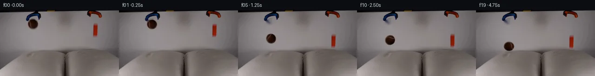
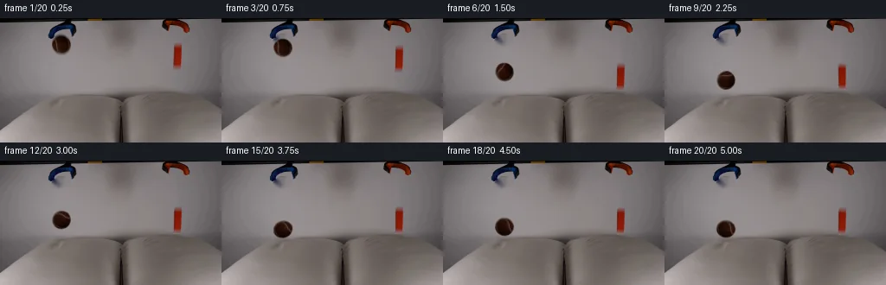
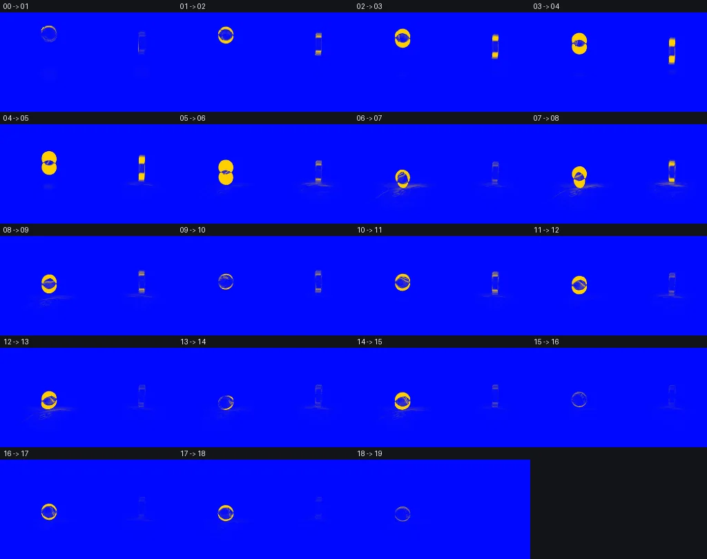

V0 · 初版即最终版
![]()
Observable Generation Trace
把最终像素视频、Harness 冻结的每轮候选、真实工具事件和 Agent 自述放在同一页。可观测证据与模型自述分开标记，避免把“模型说它检查过”误当成真实工具调用。
![首帧]()
Static locked-off single-shot with fixed frame throughout filmed with constant framerate in real-time. The scene shows a realistic scientific demonstration. The scene only contains the described setup and actions. Two pillows are on a table and two grabber tools are positioned above them. The grabber tools release the brown tennis ball and the orange block.
首帧显示在左侧播放器初始画面。Track 权限、隔离和 tensor 一致性来自 run manifest，而不是 METHOD.md。
上方并排显示初版和最终版，默认同步播放；下方每个版本可独立播放，也可勾选加入同步播放。仅检查图更新的连续重复快照已合并，回退旧视频仍保留为一次修订。
Observable events
来源：events.jsonl + run manifest
此 Track 禁止读取输出图片。逐轮预览由外部 Harness 自动冻结，只用于事后审计，生成 Agent 当时看不到这些页面。
Frozen candidates
每张图来自该 round 的真实 00 / 01 / 05 / 10 / 19 帧

pixels 1712fc1de4c9580e · code 2b0a7271347034c8
--- previous/generate.py
+++ current/generate.py
@@ -0,0 +1,295 @@
+#!/usr/bin/env python3
+"""Generate the 20-frame PixelWorld continuation from first_frame.png.
+
+The animation is deterministic and uses only local pixel operations. Source
+object pixels are transformed over a locally inpainted clean plate, while a
+small analytic displacement field supplies the pillow response.
+"""
+
+from pathlib import Path
+
+import cv2
+import numpy as np
+from PIL import Image, ImageDraw
+
+import artifact_io
+
+
+ROOT = Path(__file__).resolve().parent
+W, H = 256, 144
+
+
+def soft_ellipse_mask(cx: float, cy: float, rx: float, ry: float) -> np.ndarray:
+ """Return a one-pixel-feathered ellipse mask."""
+ yy, xx = np.mgrid[0:H, 0:W].astype(np.float32)
+ d = np.sqrt(((xx - cx) / rx) ** 2 + ((yy - cy) / ry) ** 2)
+ return np.clip((1.04 - d) / 0.10, 0.0, 1.0).astype(np.float32)
+
+
+def block_mask() -> np.ndarray:
+ """Source-aligned, subtly rounded alpha for the narrow block."""
+ mask = np.zeros((H, W), np.float32)
+ # The measured silhouette broadens over its first three rows and rounds
+ # again at the bottom. Fractional edge alpha retains photographed AA.
+ spans = {
+ 28: (203, 209),
+ 29: (202, 209),
+ 30: (201, 209),
+ 31: (201, 209),
+ }
+ for y in range(28, 60):
+ left, right = spans.get(y, ((201, 209) if y < 57 else (200, 208)))
+ if y == 59:
+ left, right = 201, 208
+ mask[y, left : right + 1] = 1.0
+ if left > 0:
+ mask[y, left - 1] = 0.18
+ if right + 1 < W:
+ mask[y, right + 1] = 0.14
+ # Avoid a binary-looking edge without softening the thin object itself.
+ return cv2.GaussianBlur(mask, (3, 3), 0.38)
+
+
+def clean_plate(source: np.ndarray, ball_a: np.ndarray, block_a: np.ndarray) -> np.ndarray:
+ """Remove held objects and reconstruct the neutral wall behind them."""
+ removal = np.zeros((H, W), np.uint8)
+ removal[ball_a > 0.02] = 255
+ removal[block_a > 0.02] = 255
+ removal = cv2.dilate(removal, np.ones((3, 3), np.uint8), iterations=1)
+ return cv2.inpaint(source, removal, 5, cv2.INPAINT_TELEA)
+
+
+def transform_object(
+ frame: np.ndarray,
+ source: np.ndarray,
+ alpha: np.ndarray,
+ src_center: tuple[float, float],
+ dst_center: tuple[float, float],
+ angle_deg: float = 0.0,
+ sx: float = 1.0,
+ sy: float = 1.0,
+) -> np.ndarray:
+ """Composite a premultiplied, affine-transformed source object."""
+ theta = np.deg2rad(angle_deg)
+ c, s = float(np.cos(theta)), float(np.sin(theta))
+ # Scale in object axes, then rotate into image coordinates.
+ linear = np.array([[c * sx, -s * sy], [s * sx, c * sy]], np.float32)
+ src_c = np.array(src_center, np.float32)
+ dst_c = np.array(dst_center, np.float32)
+ offset = dst_c - linear @ src_c
+ matrix = np.column_stack((linear, offset)).astype(np.float32)
+
+ premul = source.astype(np.float32) * alpha[..., None]
+ moved_rgb = cv2.warpAffine(
+ premul,
+ matrix,
+ (W, H),
+ flags=cv2.INTER_CUBIC,
… diff truncated; 208 more lines …Final visual checks
Harness 保存的最终产物


Agent claims
以下文字由生成 Agent 撰写，不等同于工具证据
The source was inspected only through local Python RGB arrays, statistics, connected components, edge coordinates, and text/ASCII summaries. No image viewing or image-read tool was used.
x=60..81, y=20..40, center (70.5, 30.5), radius about 10.5 px. Its brown component is markedly darker and red-biased relative to the wall.x=55..85, y=7..24, with the uppermost hardware clipped by the frame.x=200..210, y=29..59, about 10 x 31 px. Its RGB values are strongly red/orange biased.x=187..220, y=2..17, also clipped by the top edge.y=88 under the ball. The pillow expands toward the bottom-left and reaches roughly x=0..135 near the bottom.y=84 under the block, extending rightward to the frame edge. A narrow dark seam/gap lies near x=138..148.| Frame | Time | Planned event |
|---|---|---|
| 00 | 0.00 s | Exact source frame; both objects held. |
| 01 | 0.25 s | Release begins; both objects barely separate from the grabbers. |
| 02 | 0.50 s | Both objects accelerate downward; growing separation is visible. |
| 03 | 0.75 s | Continued free fall; block is close to its pillow. |
| 04 | 1.00 s | Block approaches contact; ball remains in free fall. |
| 05 | 1.25 s | Block makes first contact; right pillow begins to indent. |
| 06 | 1.50 s | Block compresses the right pillow; ball reaches the left pillow. |
| 07 | 1.75 s | Maximum first compression on both pillows; ball visibly squashes. |
| 08 | 2.00 s | Ball rebounds upward; block makes a small damped rebound. |
| 09 | 2.25 s | Ball rises; block nears the top of its short rebound. |
| 10 | 2.50 s | Ball reaches rebound apex; block starts descending again. |
| 11 | 2.75 s | Both objects descend toward their pillows. |
| 12 | 3.00 s | Block settles into a second contact; ball nears its second contact. |
| 13 | 3.25 s | Ball makes its second, smaller impact. |
| 14 | 3.50 s | Small secondary compression and tilt/rocking response. |
| 15 | 3.75 s | Residual ball hop and block rocking are strongly damped. |
| 16 | 4.00 s | Objects return toward their resting positions. |
| 17 | 4.25 s | Very small final oscillation. |
| 18 | 4.50 s | Near-rest on the pillows. |
| 19 | 4.75 s | Stable final rest: ball on left pillow, block upright on right pillow. |
The response is deliberately damped because pillows absorb energy. The differing object clearances create the physically important staggered impacts even though release is simultaneous.
I used local Python code to load first_frame.png as numeric RGB data. Measurements came from channel statistics, red/orange color-bias masks, connected components, Canny edge coordinates, row/column profiles, and ASCII summaries of small pixel blocks. I did not use an image Read/View tool and did not visually review the PNGs.
The measurements identified a brown ball centered at about (70.5, 30.5), a narrow orange block centered near x=205, a left pillow contact surface around y=88, and a right pillow contact surface around y=84.
generate.py performs the following deterministic local operations:
y=82 to move pillow pixels downward at contact. This produces a deeper first dent and smaller secondary dents without moving the camera or unrelated background.first_frame.png directly into frame 00, bypassing reconstruction, to guarantee exact equality.All rendering is performed at the target 256 x 144 resolution. There are no external assets, models, engines, masks, or network calls.
The provided artifact_io.save helper writes the uint32 0xRRGGBB tensor, 20 RGB PNGs, inspection contact sheet, and standalone HTML player. generate.py separately writes transition_check.png, a 19-tile numeric adjacent-frame absolute-difference sheet with four-times amplification.
The generator then reloads pixels.npz and every emitted PNG and checks them pixel-for-pixel against its in-memory RGB frames. It also asserts that frame 00 exactly equals the decoded source image. Numeric transition review tracked object-colored connected components, changed-pixel counts, change bounds, and text-rendered silhouettes at the fall, impact, rebound, and final-rest frames.
To reproduce all artifacts, run:
python generate.py